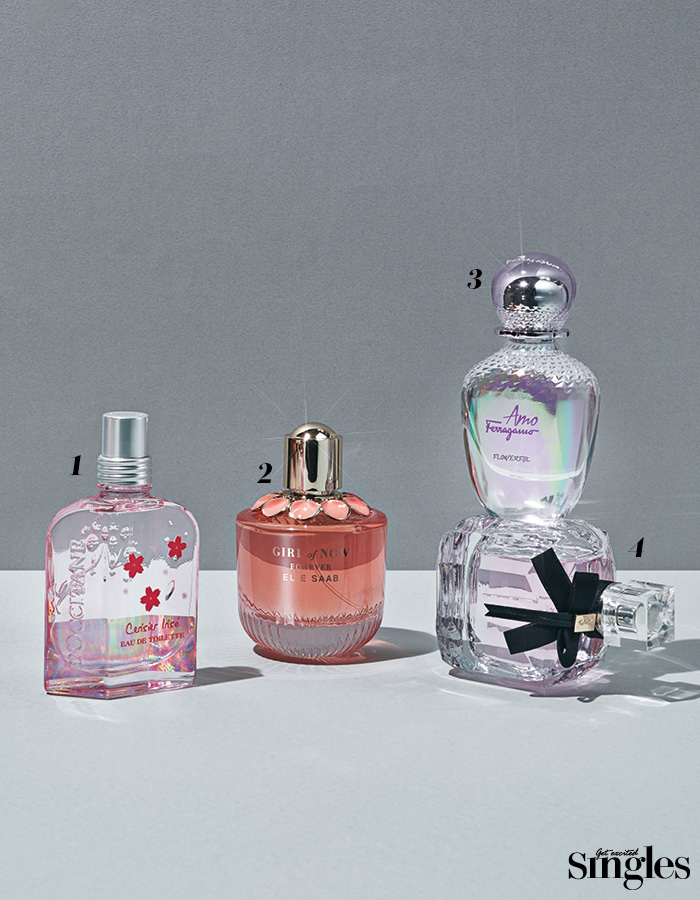

The incense of the day when I put my date in front of you

When you have to express a lot of femininity, the easiest way to transform is to use a sweet floral
fragrance.
If the fragrance of fragrant flower is attractive fragrance, it will be able to produce a different
appearance than usual.
When choosing a floral fragrance, choose a non-artificial fragrance.
1. L'Occitane Cherry Hologram Eau de Toilette |
Floral fruity fragrance inspired by holographic colors. 50ml 59,000 won.
2. Eli Saab Girl of Nau Forever6 |
Eau de Parfum The signature of the Girl of the Nautical series, Almond Incense, has become even more special
with orange blossom added. 90ml 145,000 won.
3. Ferragamo Amplified Whirlpool |
Pink Fioni, Jasmine, Plum Blossom notes are rich in scent. 100ml 164,000 won.
4. Maternity of Montpellier de Paris Peng |
Raspberry with sweetness of love - Strawberry offers fascinating reverberation. 90ml 214,000 won.